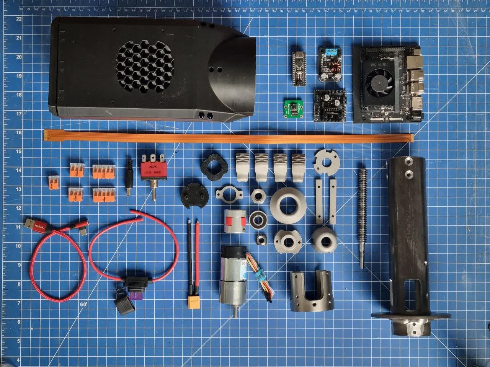
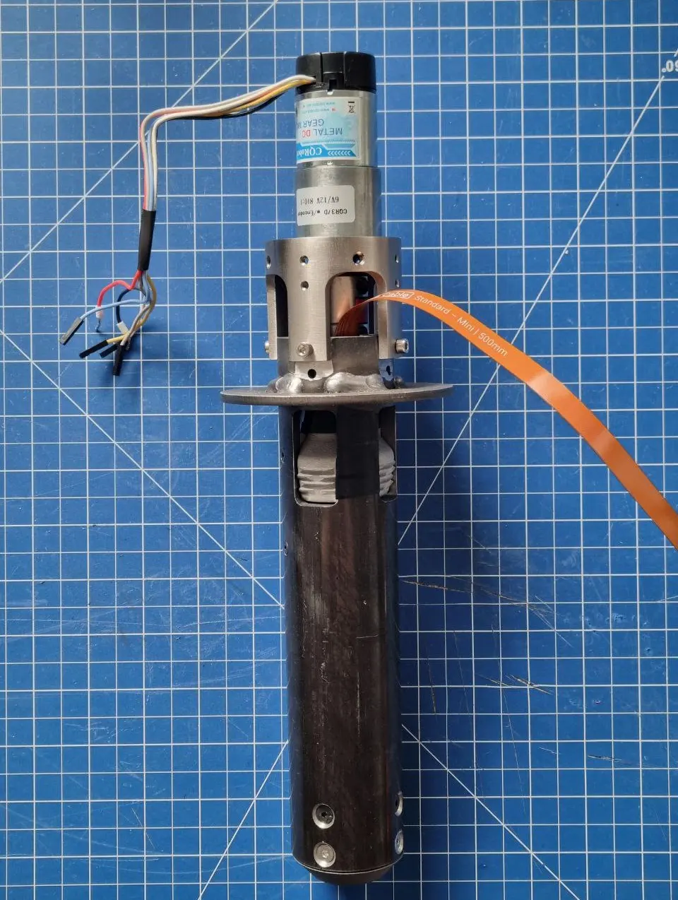

research
Lights Off Mobile Robot

- context
- ICD, University of Stuttgart
- year
- 2024–25
- type
- research
- my role
- Casing design and 3D Printing, Electronics and Wiring
The research aims to develop core technologies for automated on-site timber construction with a primary focus on automating the on-site positioning, joining, and gluing of large-scale timber elements.
For this, the project explores the application of a multi-scalar robotic team to enhance traditional construction equipment with digital control systems and innovative, distributed clamping robots. The comprehensive system implementation seeks to improve the construction process and expand architectural design possibilities in timber structures.
The robot consists of a digital camera connected to the brains of the operation - an Nvidia Jetson Orin Nano, which also controls a motor that drives the clamping system.

